La identidad que sale de la web nueva y se lleva a Facebook: un símbolo que se reconoce a 40 px, dos tipografías, una paleta de cinco colores y 11 piezas listas para publicar.
Revisión hecha el 30 de septiembre de 2026 desde Meta Business Suite, con acceso de administrador.
| Qué | Estado | Detalle |
|---|---|---|
| Sitio web en la página | Bien | cerrajeriaartavia.com ya aparece en Enlaces y en Detalles. |
| Teléfono, WhatsApp, correo | Bien | 7290 7799 (llamada y WhatsApp) y artaviacerrajeria@gmail.com. Coinciden con la web. |
| Horario y categoría | Bien | Siempre abierto · Cerrajero. |
| Publicaciones repetidas | Corregir | El afiche "¿Se le quedó la llave dentro?" está publicado 6 veces entre el 17 y el 29 de septiembre, todas sin texto. Facebook reparte menos lo repetido y nadie comparte una imagen sin mensaje. |
| Afiche de cobertura viejo | Corregir | Uno de los afiches dice "Escazú, Sabana, Pavas, La Uruca, Hatillos". No coincide con la zona actual: San José y Heredia. |
| Foto de portada | Corregir | Es el afiche cuadrado recortado a banner: se ve "Duplicado de llaves con y sin chip" cortado. |
| Foto de perfil | Mejorar | El logo de las nueve llaves se empasta en tamaño pequeño (comentarios, Messenger). |
| Presentación | Mejorar | "Nos distingue la confianza y calidad…" no dice qué hacen ni dónde. Propuesta abajo. |
| Opiniones | Mejorar | 0 opiniones. Pedirle a cada cliente satisfecho que deje una. La web muestra "4.6★ con 32 opiniones en Google": confirmar ese dato o quitarlo. |
| Perfil personal "Cerrajería Artavia" | Revisar | Además de la página existe un perfil personal con el mismo nombre (31 amigos). Facebook prohíbe perfiles personales con nombre de negocio y puede cerrarlo; conviene usar solo la página. |
Noche cálida de fondo, oro solo en lo que importa: el teléfono, la palabra clave del titular y los botones.
#0F0E0C#242220#F5B400#FFD65C#F4EFE4¿Se quedó afuera? Salimos ya.
Le hacemos la llave aunque no tenga muestra.De usted, frases cortas, una idea por pieza, siempre con el teléfono.
Somos la solución más confiable y segura del mercado.
Rapidez · Confianza · Seguridad · 24 h · Autos · Casas…Frases genéricas o nueve servicios a la vez: no se recuerda ninguno.
Tamaños exactos de Facebook. Los textos para copiar de cada una están en marca/textos-publicaciones.md del repositorio.
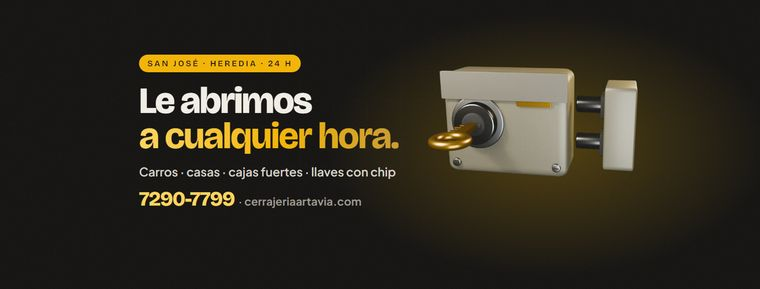
Portada de Facebook1640 × 624 · texto fuera de la zona que tapa la foto de perfil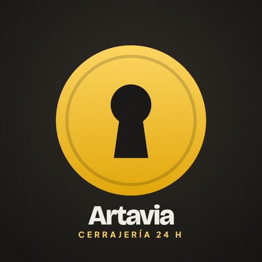
Foto de perfil720 × 720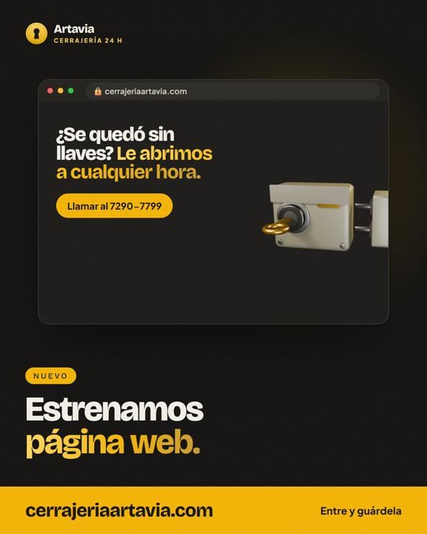
Lanzamiento de la web1080 × 1350 · publicar primero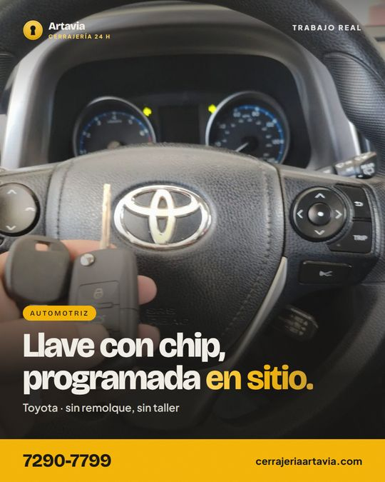
Trabajo real · Toyota1080 × 1350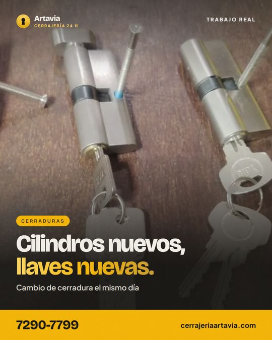
Trabajo real · Cilindros1080 × 1350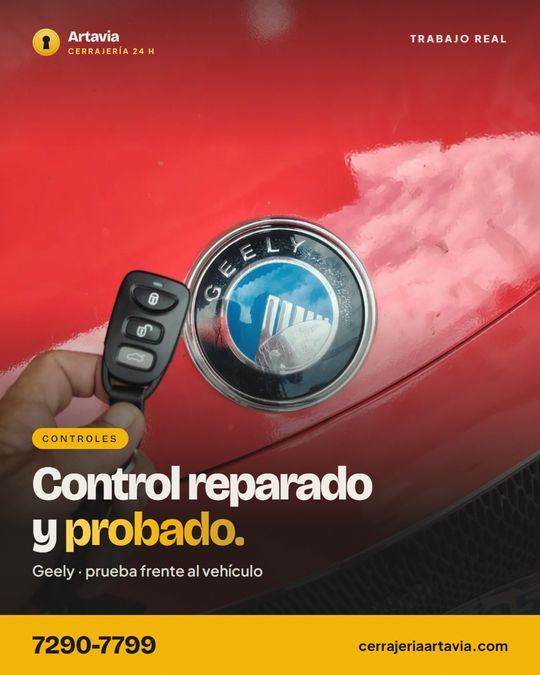
Trabajo real · Geely1080 × 1350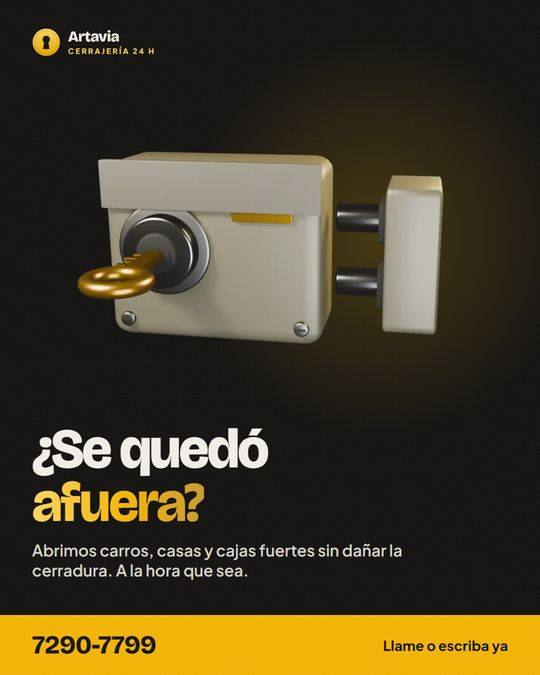
¿Se quedó afuera?1080 × 1350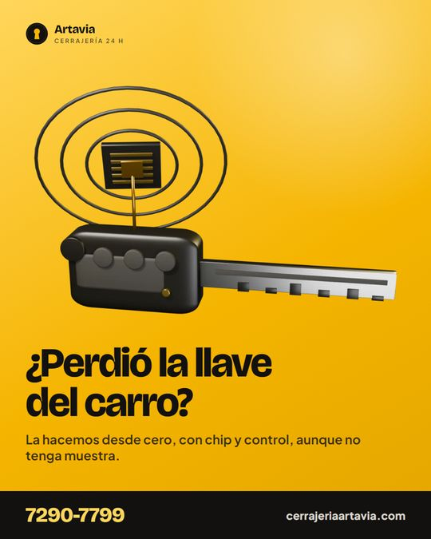
¿Perdió la llave del carro?1080 × 1350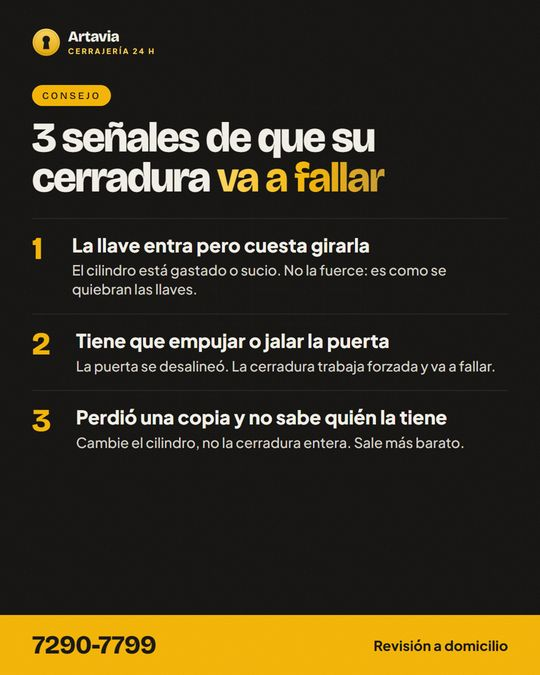
Consejo · para compartir1080 × 1350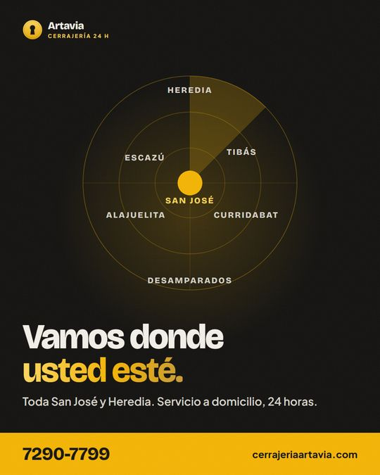
Cobertura1080 × 1350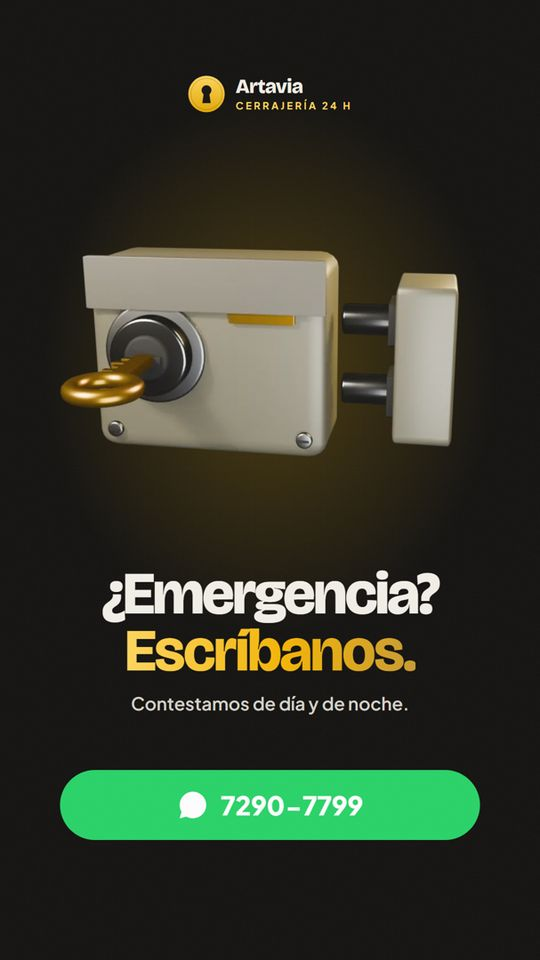
Historia · WhatsApp1080 × 1920 · con sticker de enlaceNada de esto se ha hecho todavía. Se aplican cuando el dueño de la página los apruebe.
Se deja el más reciente. Archivar los oculta del muro sin borrarlos: se pueden restaurar cuando quieran.
El que nombra Escazú, Sabana, Pavas, La Uruca y Hatillos. Lo reemplaza la pieza de Cobertura.
Por las piezas 01 y 02 de esta guía.
Propuesta (Facebook permite 101 caracteres): Cerrajería 24 h en San José y Heredia. Carros, casas y llaves con chip. cerrajeriaartavia.com
Pieza 10 con su texto. Después, el calendario de 3 publicaciones por semana.
Lo que más alcance ha tenido la página es un video real de 15 segundos programando una llave (31 mil vistas), no los afiches. La regla para lo que venga: grabar cada trabajo con el celular en vertical.